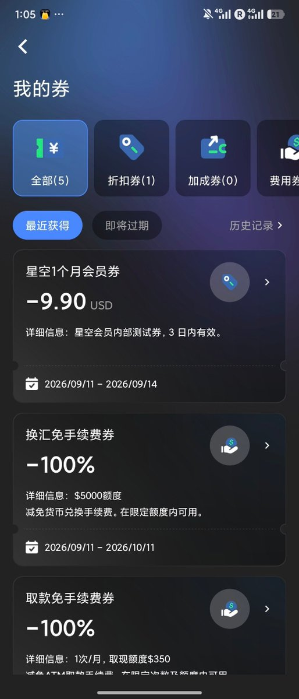
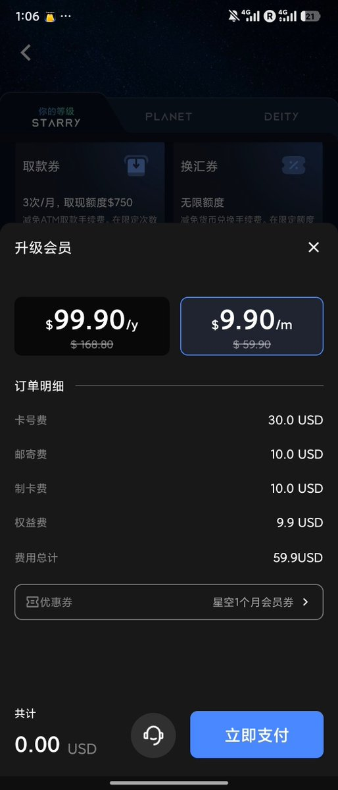
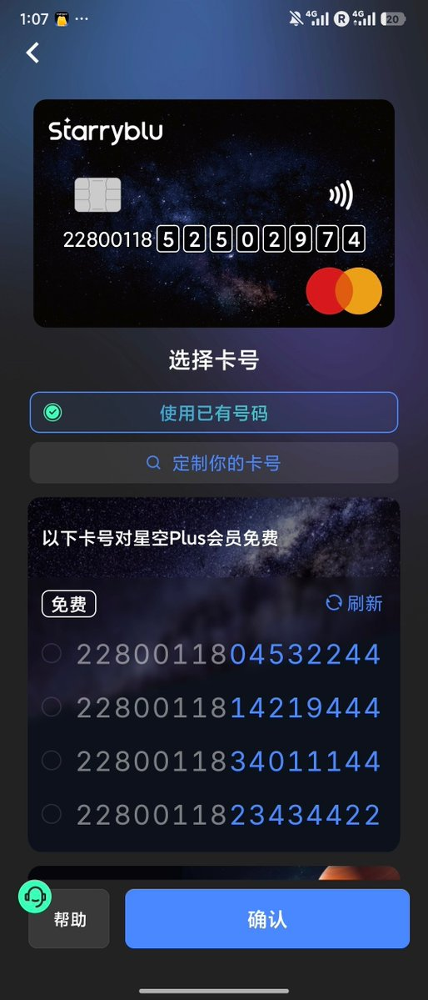
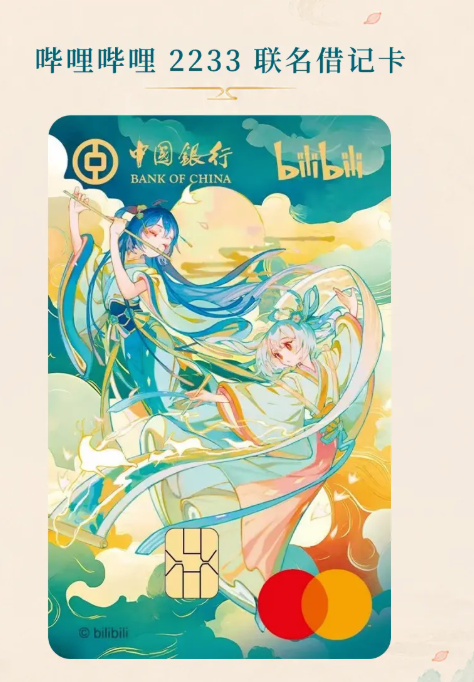
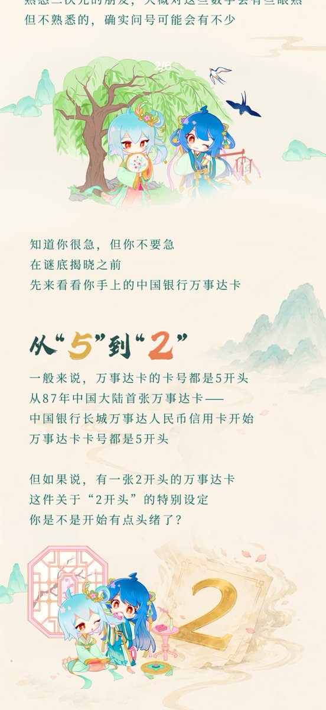
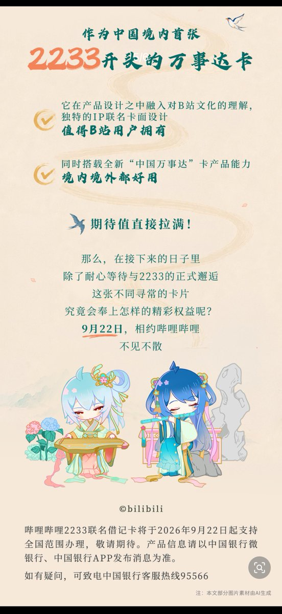

奶昔🥤
@realNyarime
应该是第二个用2开头的万事达，第一家应该是熊猫速汇的Starryblu
他家最近随机灰度【星空1个月会员券】可以兑换后换卡号并兑换实体卡，算是不错的权益了
卡BIN：22800118，准确说万事达除了5开头又拿了个22开头的段，还是清一色的16位






浪险 | 出海基建·港美卡·云居民
@sino_go_global
年轻人的第一张万事达人民币卡？
中行官宣新产品：哔哩哔哩 2233 联名借记卡（万事达），9 月 22 日起全国范围可办。
研究了一下，有点意思啊
——中行 1987 年发了大陆首张万事达信用卡，卡号 5 开头。
这次新万事达卡 2 开头，呼应 2233 联名，也是中行来首发。
从 5 到 https://t.co/P9iCMmcMlo https://t.co/lue8aDLwYX